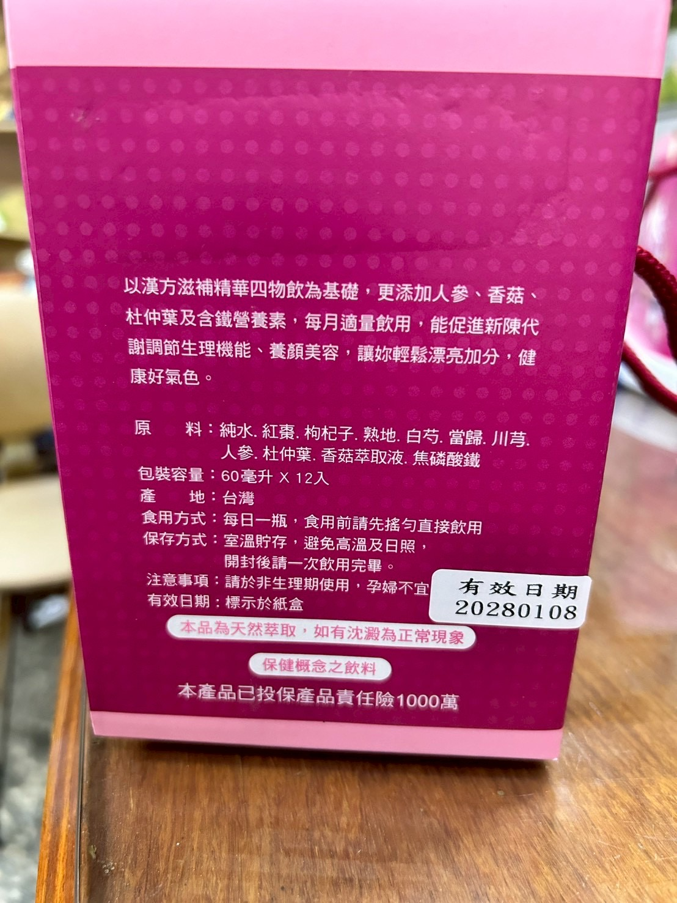

產品完整介紹
規格、成分、使用與保存
規格
60毫升 × 12入／盒成分
- 純水
- 紅棗
- 枸杞子
- 熟地
- 白芍
- 當歸
- 川芎
- 人參
- 杜仲葉
- 香菇萃取液
- 焦磷酸鐵
一般使用
- 每日一瓶
- 飲用前請先搖勻，直接飲用
保存
- 室溫貯存，避免高溫及日照
- 開封後請一次飲用完畢
注意事項
- 請於非生理期使用，孕婦不宜
- 天然萃取，如有沉澱為正常現象
- 照片為包裝樣品；實際出貨批次與有效日期以收到的商品標示為準
商品特色
- 60毫升單次包裝
- 12入盒裝
- 全素，依原廠包裝標示
供貨與配送
價格、供貨與配送時間請透過官方 LINE 確認。原廠包裝標示
